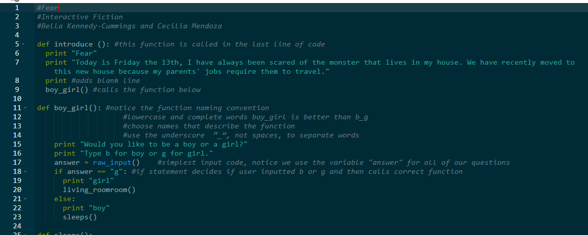
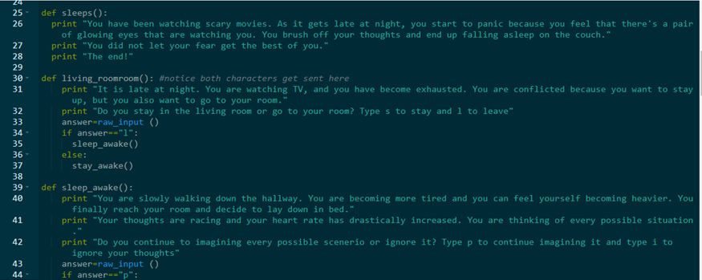
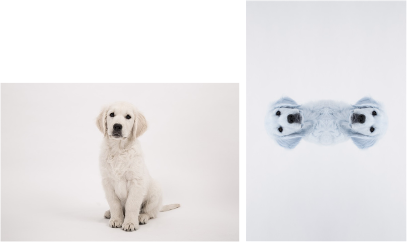

The purpose of the story is to make choices that will enable the user to successfully escape out of jail. The story is interactive for the user. For instance, the user uses the mouse by clicking on the choice he/she wants. Their choices will affect the outcome of the story. The program had algorithms incorporated into it. An algorithm is a series of steps, and it also involved logical concepts because it was composed of "if-else" statements. A condition happened depending if it was a true or false statement. To simplify the complexity of the program abstraction was used for the sprites. The abstraction enabled us to create simpler code. For example, the sprite was already moved into the designated postion when the next background popped up.The overall story is made up of different acts that have different outcomes. Throughout this project, I learned different concepts. A new concept I learned was abstraction. I became aware abstraction was used in a complex situation in order to create simpler commands. In this project, one of its strenghts is that it requires uses interaction. The project is also able to complete the task. One of the weaknesses within this project is that most of the code was similar. In addition I also learned that for the next project, I should attempt to use a greater variation of code and try new things. Potential plans for the future to improve this game are to incorporate more algorithms and make the story plot more challenging. The idea behind making the story plot more difficult is to expand the story and enable users to use their critical thinking skills. In addition, adding more algorithms would make the program more complex because this would enable the user to have more options. To make the program more efficient, an option where there are only two different outcomes would also need to be created.
The purpose of our app was to enable children to become more familiar with letters, numbers, and shapes by tracing them. A user has the choice of choosing alphabet, letters, or numbers to trace. The key features includetracing, colors, and the sharing button. Tracing enables the user to use his/her finger to writeover the text provided on each screen. The colors is an option composed of different colors.These colors include red, green, black, blue, and purple. The individual can also choose thecolor he/she wants to trace the letters, numbers, or shapes with. Another key feature is the sharing button. The user can click on this button to share their progress or what they traced.This button is intended to share the completion of the work. The program was composed of several algorithms. One of the algorithms that was essential to the program was the part that enable the user to use his/her finger to trace. When the user traces the numbers, letters, or shapes, the traced part is stored and the output is a bitmap, meaning that the origininal image becomes updated with the pixels from the color that is selected. Each of the scrreens also have a clear button. The clear button is to erase all the tracing in the screen that was selected. It wipes all the tracing off. Once the user finishes tracing, he/she is giving the option to share his/her result. At any point, the user is able to return to the main menu. From completing, this project I learned how to merge the five screens together and use algorithms that would return the user to the main menu if necessary. Potential plans include, adding an option where the user can select his/her own image to trace or adding another option where the user is able to color in an image instead of tracing.


The purpose was to use python to create a story. The name of the story is called "Fear". The story is about a person trying to overcome his/her fears because he/she believes that there is a monster. Throughout the story the user must make decisions that will affect the output of the story. Functions were used to develop the story. The program also requiresthe user to enter input. The user enters input to make a choice by choosing one of the given letters. After that, a new function will be call and the story will continue. Within each function, there is boolean data because if-else statements were incorporated. The if-else statements were also used to call upon other functions. While developing, the program I learned that indentations are extremely important because if something is not indented correctly the code will not be executed. Another important thing I learned was that punctuation is essential to the program because if there is something missing the code will not be executed properly, and it will return errors. At the end, the program worked properly, however I did not like the plot of the stroy. After completing the programing, I figured out that I could have incorporated while-loops to repeat parts of the code.
The purpose of this program was to help students develop their math skills and improve in an area. The students are given the opportunity to choose between Geometry, Algebra I, Algebra II, Trigonometry, Calculus, and Probability. After they make their choice, they will be given 5 multiple choice questions within that area. The multiple-choice questions narrow down what the user can input. This enables the program to be more user friendly because the user becomes aware of what he/she has to input. The program is composed of elif statements and while-loops. In this version the while-loops are a key feature because when the user enters invalid input, he/she has the opportunity to retry until he/she enters valid input. The letter the user inputs is stored and depending on the answer the program move on to the next question. When the user completes a section, he/she is given the option to select another section or simply end the program. To improve this program, I think a timer or a section that kept track of the score would make the program better because it woudl keep track of the user's progress.Another way that this program coudl be improved is for it to call another section automatically once a user completes one section. This was the student would be required to complete each individual section, and this would enable them to improve in their math skills.

The purpose was to make a program that would edit images. The user chooses the image he/she wants to edit by entering the name of it. The band in the image is splitted. This gives the image a blue band. The image is also rotated 270 degrees. After that image is cut in half and then it is mirrored. Then both of the images appear and the altered one is saved. While working on this project, my partner and I did a lot of trial and error. Our original idea did not work because it was more complex than we expected. When we started working on this project simplicity was not in our mind because we wanted to create a more complex feature for the image. At the end I learned that simplicity is the best option sometimes because sometimes something that is less complex prevents overthinking. A potential way to improve the program is to add a fucntion where the user is able to select the image without having to type the name of the selected image.
The inteded goal of this project was to research a malware and determine how the malware functions and affects a system as well as the population. The malware my partner and I chose was Conficker. Conficker is a worm that targets Microsoft Window Systems because the malware blocks security updates. The worm was first discovered in 2008. Even though, this malware is a detriment, there are security measures to stay protect it. One way to avoid the installment of Conficker is to keep one's computer updated. The presentation of this malware was collaborative. My partner and I evenly distributed the work. One of the things that I would do to improve this project would be to add more visuals in order to provide the audience with a better context of what conficker is. From, this project I became a little paranoid because at the moment my anti-virus had expired a few months ago, and this project made me realize how important it is to protect my devices from untrusted entities.
The objective of this project was to demonstrate how computational innovations uses big data. The innovation I chose was facial recognition. Facial recognition uses big data because it gathers information from security cameras. Facial recognition is composed of a variety of data. The various types of data include images and video. That data is stored in a database by the government, and it is used to identify individuals. Often is used to target the audience in order to show individuals advertisements. Facial recognition software consumes data by face detection, meaning algorithms are used to identify the faces with a give image. Then, data is extracted by algorithms that measure facial features including, skin color and the distance between the eyes. That data is used to create a template. After the template is compared to other templates within the database for identification. Furthermore, big data plays a major role in our current world because we must be careful of how we used it since it’s both advantageous and a detriment. This project was a great learning experience because I was not aware that our world I build upon big data. On of the items I had trouble with was identifying how facial recognition uses variety, volume, or velocity. In order to understand this, I watched videos on how each of them related to big data. If I were to improve this project, I would do more research about the topic in order to become more informed.
For the following project, our goals was to use a visual to represent a set of data. We used a large set of data, some of the tables that we used to gather our information were hundreds of numbers long while other ones were shorter. The information we gathered was non-government organizations and the funds granted to them. There was a vast variety of organizations that assisted with different social problems. All of the organizations were organized into categories with some ranging from anywhere between 20- 1,000 smaller organizations. We used a total of ten data sets and each was part of a pdf so we converted each file into excel format. Then, we merged the totals from each data by calculating them with excel and created a new file that had all the totals. We used excel again to create the visuals. Throughout the process, we filtered part of the data when we combined the totals. One of our struggles was combining all the data because we decided to used all of the data sets that were in the PDF file. If I had the chance to improve this project, I would do a sample of the data in order to be more efficeint instead of compressing each file. During this activity, I learned that excel is useful when displaying data because it speeds up the process sinceit is able to do calculations and organize the data. This project also taught me how thoroughly analyze data in a more efficient manner.
This CSS file, also known as a Cascading Styles Sheet, was one of the most enjoyable parts of creating this website. In the beginning I was having trouble linking the CSS file to my portfolio because none of the changes showed up. I discovered that there was an issue with the location of the file because it was located in the images folder, so I took the file out of that folder and placed it with the other sections, including the index, portfolio, and about me files. The purpose of this project was to add modifications to my website. Those modifications included changing fonts, size of font, and adding a background. I think the most significant part of this section was the "html, body" because this prevents the pages from scrolling horizontally. I decided to get rid of the scrolling horizontally option because I simply did not like that since the text seemed to extend forever. I had fun creating this section because there were many options to choose from, and if I were to improve this project, I would continue adding modifications because they enable me to expand my creativity.